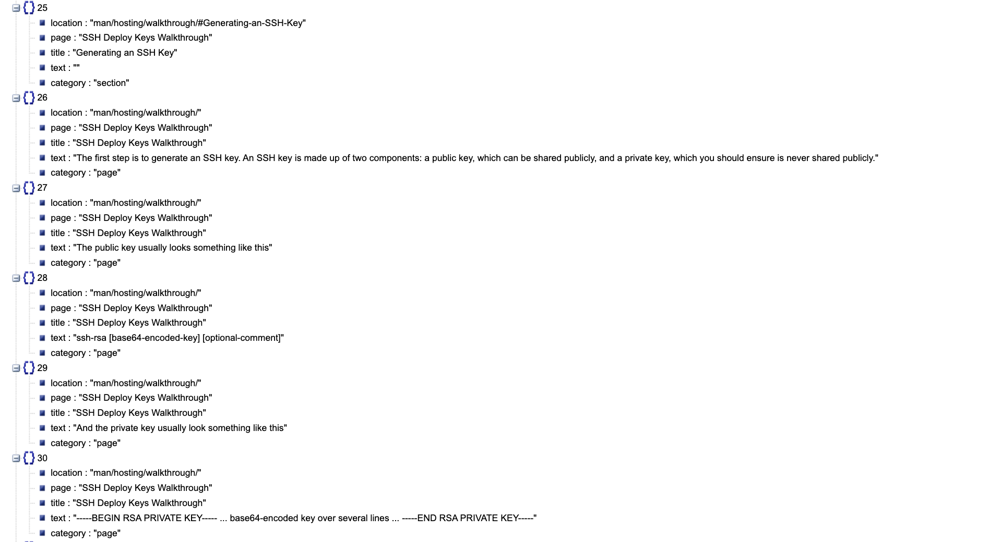
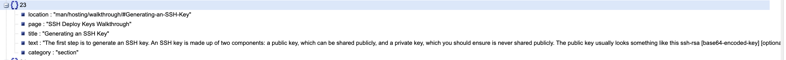
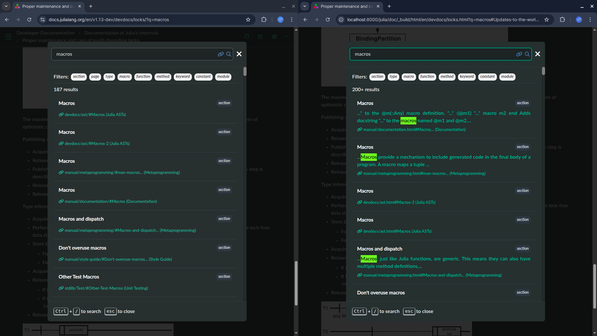
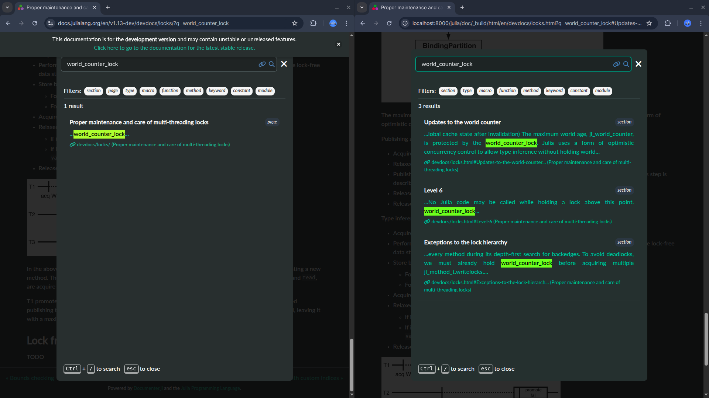
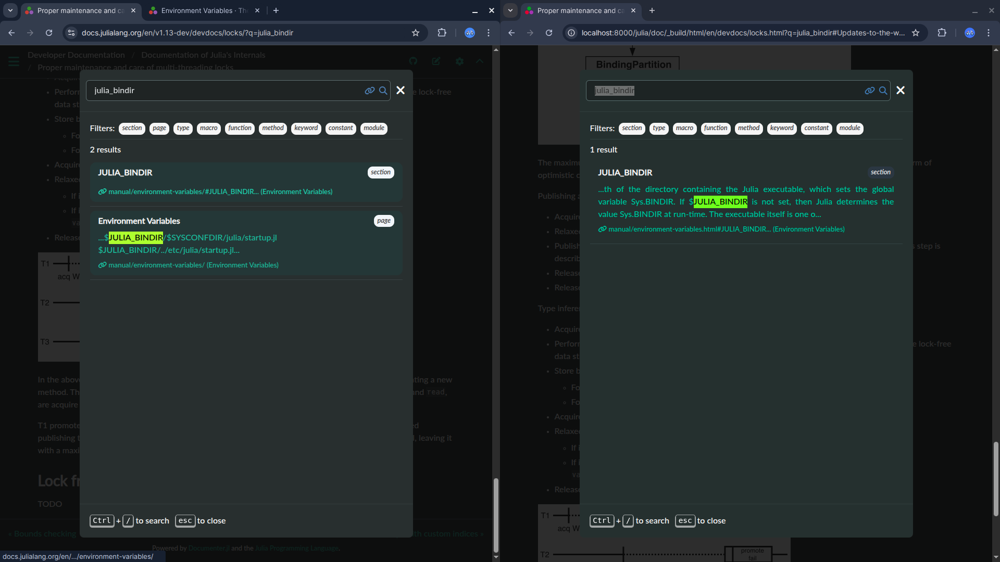
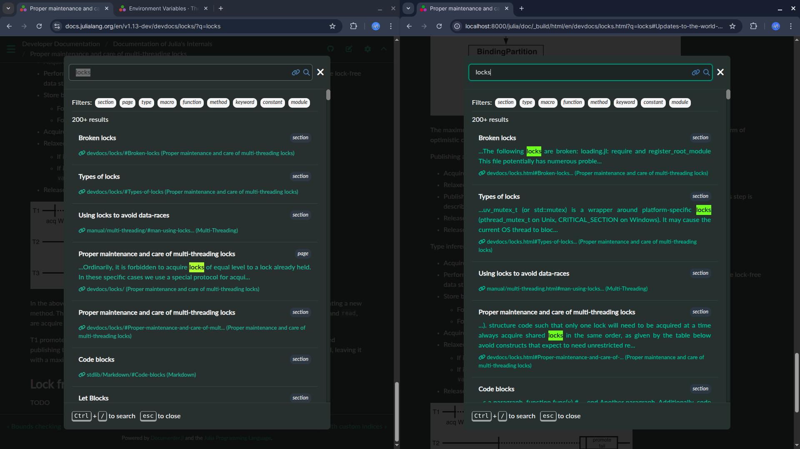

Remove the page category from the search index and make everything a section
Relevant PR : #2762
TL;DR
This PR removes page categories from the search index and concatenates everything into sections instead. The changes modify how the documentation search functionality organizes content - rather than maintaining separate page categories, all content is now structured as sections within the search index. This appears to be part of a search index overhaul to simplify the organization structure.
Idea
My mentors suggested that the search index size will reduce a lot and the search results will be much better if we could just remove the page category and make everything a section. The biggest blocker in this was what about the text that does not come in any section like the text before any section and the text at the end of the page which does not have any section
Implementation
Creating struct
# Content segment for grouping content by sections
struct ContentSegment
section_header::Union{Node, Nothing} # AnchoredHeader node or nothing for default section
content_nodes::Vector{Node} # Content nodes belonging to this section
endCreating functions
I added two functions to implement this approach
- First function is
segment_page_by_sections()It breaks page content into segments based on section headers.
# Segment page content by sections for improved search indexing
function segment_page_by_sections(page_mdast::Node)
segments = ContentSegment[]
current_segment_content = Node[]
current_section_header = nothing
for node in page_mdast.children
if node.element isa Documenter.AnchoredHeader
# Save previous segment if it has content or a header
if !isempty(current_segment_content) || current_section_header !== nothing
push!(segments, ContentSegment(current_section_header, copy(current_segment_content)))
end
# Start new section
current_section_header = node
current_segment_content = Node[]
else
# Skip nodes that shouldn't be indexed
if !(node.element isa _SEARCHRECORD_IGNORED_BLOCK_TYPES)
push!(current_segment_content, node)
end
end
end
# Add final segment
if !isempty(current_segment_content) || current_section_header !== nothing
push!(segments, ContentSegment(current_section_header, current_segment_content))
end
return segments
end- Second function is
create_segment_search_record()It creates search record for each content segment
# Create search record for a content segment
function create_segment_search_record(ctx::HTMLContext, navnode::Documenter.NavNode, segment::ContentSegment)
if segment.section_header === nothing
# Default section - use page title and aggregate content
page_title = mdflatten_pagetitle(DCtx(ctx, navnode))
content_text = isempty(segment.content_nodes) ? "" :
join([mdflatten(node) for node in segment.content_nodes], "\n\n")
return SearchRecord(
pretty_url(ctx, get_url(ctx, navnode.page)),
getpage(ctx, navnode),
"", # no fragment for default section
"section", # changed from "page" to "section"
page_title,
page_title,
content_text
)
else
# Named section
a = segment.section_header.element.anchor
section_title = mdflatten(segment.section_header)
content_text = isempty(segment.content_nodes) ? "" :
join([mdflatten(node) for node in segment.content_nodes], "\n\n")
return SearchRecord(
pretty_url(ctx, get_url(ctx, navnode.page)),
getpage(ctx, navnode),
Documenter.anchor_fragment(a),
"section",
section_title,
mdflatten_pagetitle(DCtx(ctx, navnode)),
content_text
)
end
endand then in the domify function, iteratively create search records for each segment
function domify(dctx::DCtx)
ctx, navnode = dctx.ctx, dctx.navnode
page_mdast = getpage(ctx, navnode).mdast
# Generate search index using new segmentation approach
segments = segment_page_by_sections(page_mdast)
for segment in segments
search_record = create_segment_search_record(ctx, navnode, segment)
push!(ctx.search_index, search_record)
end
# Generate HTML as before - process each child node individually
return map(page_mdast.children) do node
domify(dctx, node, node.element)
end
endWhat we are essentially doing here is concatenating all the content nodes in a single section and joing it with the header to create the ContentSegment struct
earlier the search index looked like this

now it looks like this :

these are some before and after results. Thank you Morten for sharing this :)    
There is considerable improvement in the size of the search index and relevance of search results.